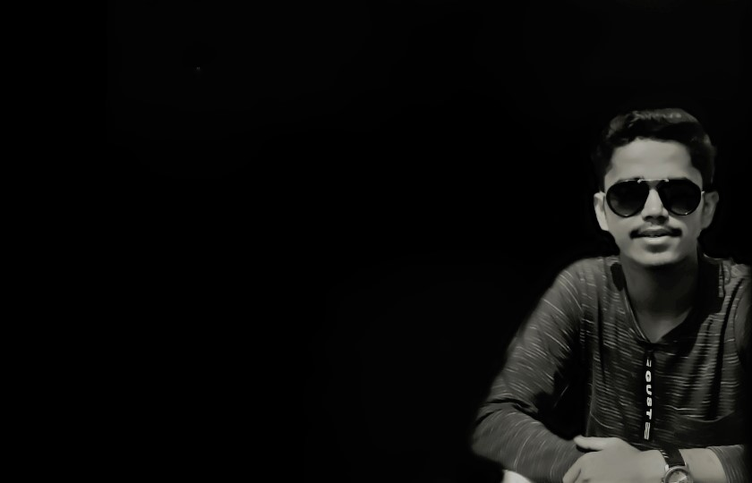

Hello! This Is Arpit...
It's Not Over Until , I Win.
Hello Visitor. This is Arpit Chandak , I am a Learner, Coder, Developer.
I am pursuing Btech in Computer Science From Amity University Rajasthan. I am very hard-working and versatile person. I believe in myself and I never give up on the task I am doing until I accomplish it.
I am an introvert person and I love to make new friends.I am always ready to help my friends no matter what. I love travelling with my family and friends.
